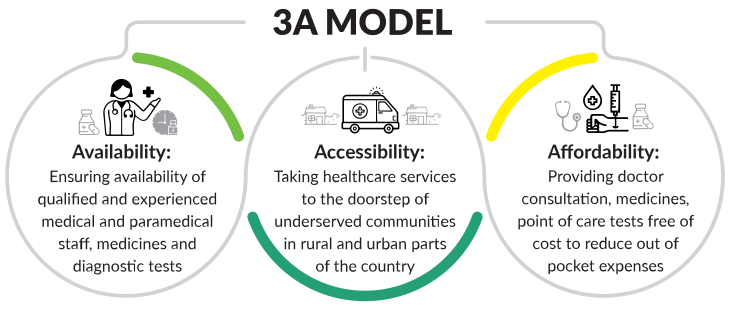
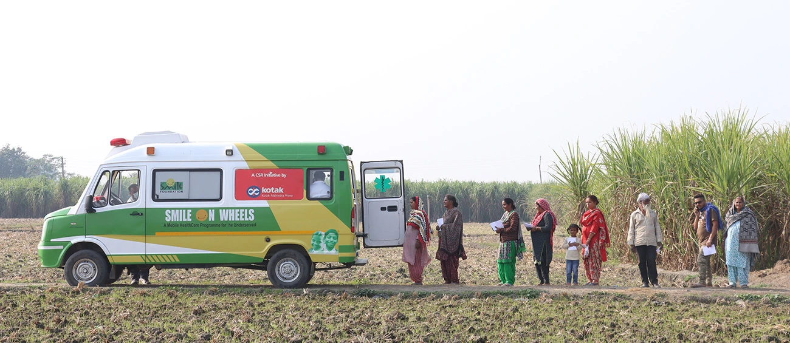

12,89,269+
People
16
States
Promoting health and well-being is one of the 17 Global Goals that comprise the 2030 Agenda for Sustainable Development. Ensuring healthy lifestyles and encouraging well-being at all ages is critical to long-term development.
Smile Foundation’s comprehensive and community-centric health programme aims to contribute towards the goal of Universal Health Coverage (UHC) which entails ensuring all people have access to quality health services – including prevention, promotion, treatment, rehabilitation, and palliation – without incurring financial hardship.
Owing to India’s population, last mile delivery of healthcare in India is a challenge. The geospatial diversity makes the situation worse in difficult terrains. Over 65% of the population living in rural areas has a smaller share of the healthcare infrastructure. The urban slum dwellers prioritise everyday survival over health. This uneven distribution and lack of awareness limit the uptake of healthcare services. It is crucial to address these gaps to support Govt of India’s vision of Ayushman Bharat & UHC.
Smile Foundation’s healthcare intervention provides primary healthcare facilities at the doorsteps of the underserved communities in the identified rural areas and urban slums. The aim is to reach the vulnerable population who cannot afford basic healthcare facilities. In alignment with the three key elements of UHC2030 — access, quality, and financial protection, the programme ensures accessibility of health care services with a focus on preventive and promotive aspects of health to reduce out-of-pocket expenses by rendering outpatient services.
 Specialized Teleconsultation
In order to fill the gap of shortage of specialist doctors in hard to reach areas with special focus on mother and child care and non communicable diseases, Smile Foundation’s healthcare programme provided specialized consultation through telemedicine services in Bengaluru, Chennai and Hyderabad. The specialized teleconsultation service has made it possible for people to get specialized consultation without travelling for long distances through online, screen-based, and real-time consultations with doctors, reducing out-of-pocket expenditure.
Strengthening Government Health
Infrastructure The Primary Healthcare Centres were envisaged to provide integrated curative and preventive healthcare services to the underserved population. To address the need of upgrading the health facilities and improving the quality of service, Smile Foundation has upgraded UPHC, Anchety, Tamil Nadu, and District Hospital, Kullu, Himachal Pradesh with provision of equipment including ECG machine, OT lights, dressing trolleys, weight machines for adults and children, radiant baby warmer, fumigation machine, biomedical waste trolleys, etc.
Capacity Building of Frontline Workers
Frontline health workers are the backbone of a resilient health system. This was evidenced during the COVID-19 pandemic where they were at the forefront of managing the pandemic despite the severe risk it posed to their health. Our experience working with frontline workers reveals that investing in health workers is imperative as they are central to last-mile service delivery and ensure comprehensive healthcare. To create resilience among primary healthcare providers, 23 training programmes were organized across India on First Aid, Nutrition, Health, Immunization, Family Planning and Non-Communicable Diseases.
Mobile Dental Care Units
Smile Foundation, with the support of Haleon, is providing free oral healthcare services through four Smile on Wheels Mobile Dental Units, providing medical consultation, medicines, lab testing facilities, oral check-up, and treatment free of cost. Along with the consultation, the project also generates awareness on the importance of oral health and hygiene in the target communities in Delhi, Agra, Gurgaon, and Noida, with a special focus on raising awareness among school going children. The initiative has benefited over 48,000 people during the year, promoting healthier smiles and better futures.
Physiotherapy Centres for Transport Community
Smile Foundation and HDB Financial Services have partnered to implement physiotherapy, counseling, and therapeutic centers called Transport Aarogyam Kendra in Unnao (Uttar Pradesh), Ranchi (Jharkhand), and Ludhiana (Punjab). Designed to provide healthcare services to truckers and the broader transport community, the clinics benefitted over 71,000 people during the year. The clinics offer physiotherapy services to improve mobility and relieve pain, general health check-ups, eye care, and referrals for advanced treatment, along with physiotherapy camps at trucking hubs.
Promoting Health Seeking Behaviour
IEC (Information, Education & Communication) activities are conducted regularly under the health programme with the support of qualified doctors, paramedics and other health experts. During the year, awareness sessions were conducted on antenatal check ups, immunization for mothers and children, breastfeeding, prevention of infections, personal health and hygiene, management of vector borne diseases like malaria, filariasis, diarrhea, and typhoid, tobacco use and substance abuse, diabetes and hypertension, care seeking for blindness, first aid, and common geriatric ailments.
“Smile on Wheels has been a great support during my pregnancy. The regular check-ups give me peace of mind, and I feel reassured knowing that I’m receiving proper care for my baby and myself.”
Shashikala, five months pregnant, regularly visits Smile on Wheels (SOW) for her check-ups. These routine visits have ensured her pregnancy is progressing smoothly, keeping both her and her baby in good health. With her husband working as a daily laborer, affordable and accessible healthcare is essential for their growing family. Her story is just one example of how Smile on Wheels is making a difference, bringing essential healthcare services directly to the community. Shashikala’s experience underscores the importance of healthcare access for expectant mothers, ensuring their well-being without added financial burden.
“For someone like me, stepping out of the house isn’t easy anymore. My knees ache with every step and diabetes often makes me feel weak. The Smile on Wheels van came into my life as a ray of hope. I still remember the first time it stopped near my house. The doctors and nurses greeted me with warm smiles. They listened patiently as I shared my worries about my knee pain and sugar levels. They made me feel cared for. The doctor explained how small changes in my daily habits could ease my pain and manage my sugar levels. Every visit feels like a family member checking in and I no longer feel alone in my struggles.”
"As a mother of an 18-year-old special child, I have faced countless challenges ensuring his health and well-being. Regular medical check ups were always a struggle—not just financially, but logistically. Traveling long distances to clinics was difficult for both of us and finding a doctor who truly understands his needs felt like an impossible task. Then Smile Foundation’s Smile on Wheels healthcare van started visiting our community. The team is not just professional but incredibly compassionate. The doctor and nurse go out of their way to make my son feel at ease, talking to him kindly and ensuring he’s comfortable during every check up. For a mother like me, who cannot take her child to a doctor regularly, having this service in our neighborhood is life-changing."
- Velmurugan’s mother
"Mannu Mahato is over 100 years old and was once a stage actor known for his humor. Despite his age and health issues like body aches and hearing loss, he continues to spread joy. Living with his caring daughter and son-in-law, Mannu’s days are filled with warmth and love. During his visits to Smile Foundation’s Smile on Wheels mobile hospital, which reaches his village once every two weeks, Mannu’s spirit truly shines. While receiving medical care, he always keeps smiling. With his lively stories and jokes, Mannu transforms the mobile hospital into a place of laughter and smiles reminiscent of his days on stage. Mannu’s journey inspires us and reminds us that happiness and the ability to brighten others’ lives don’t fade with age."